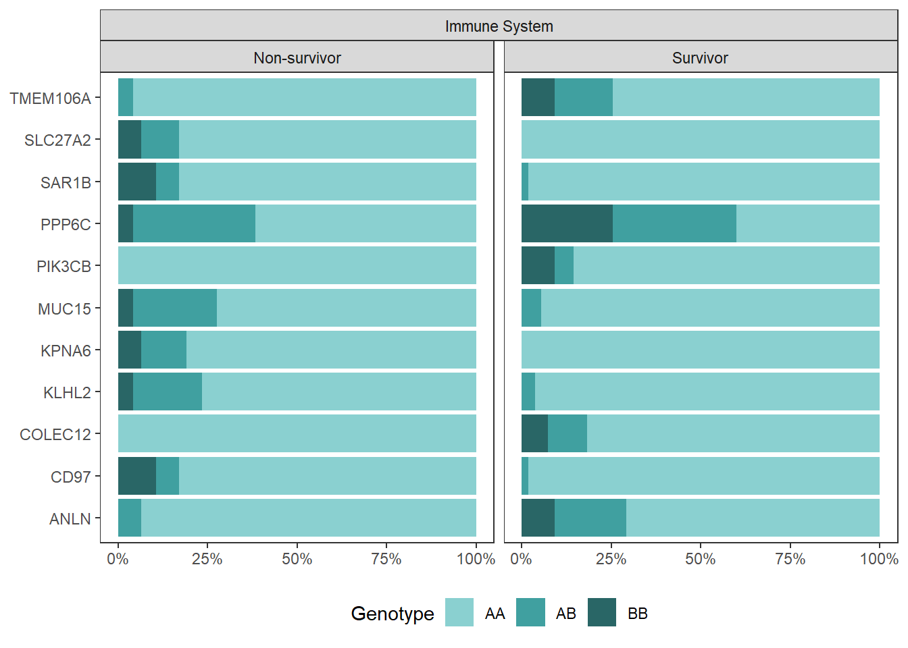
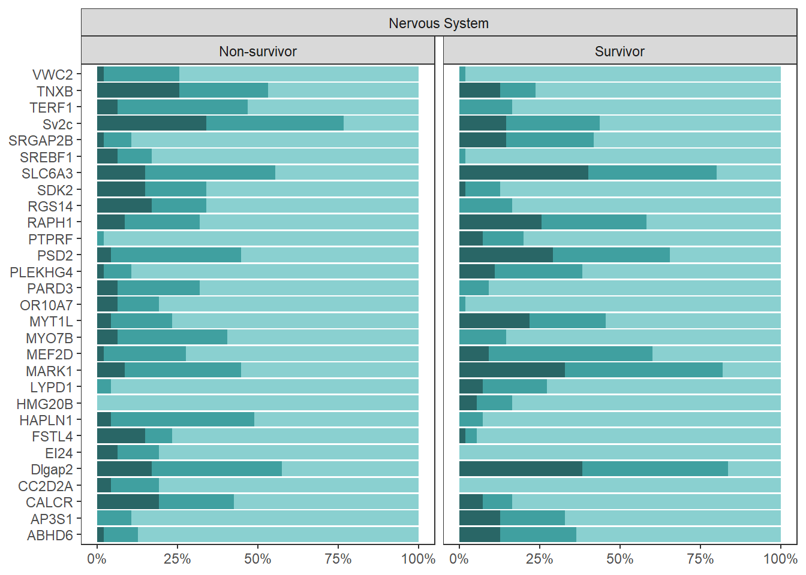
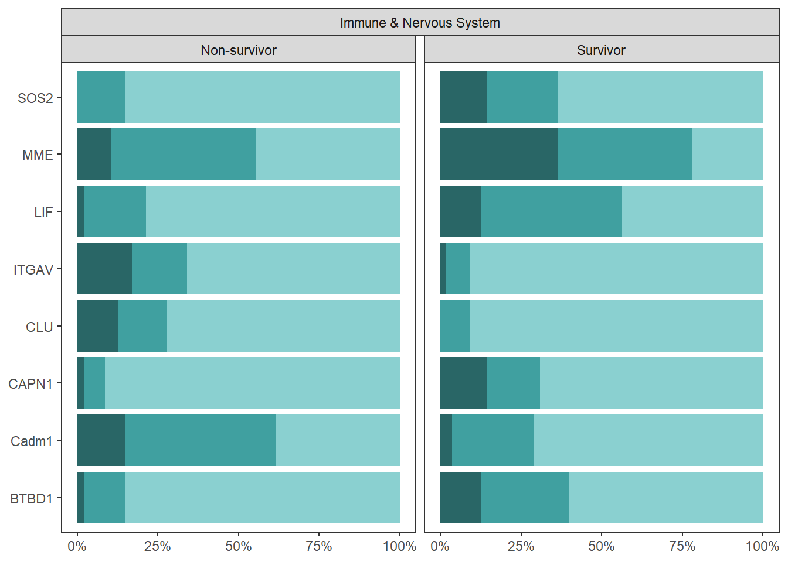
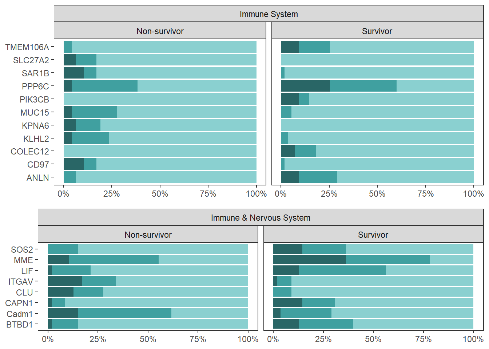
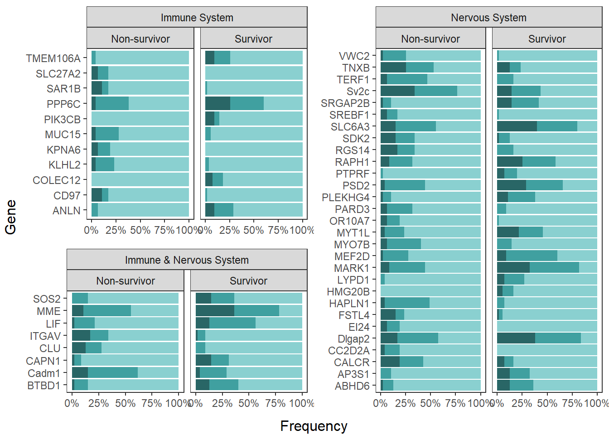
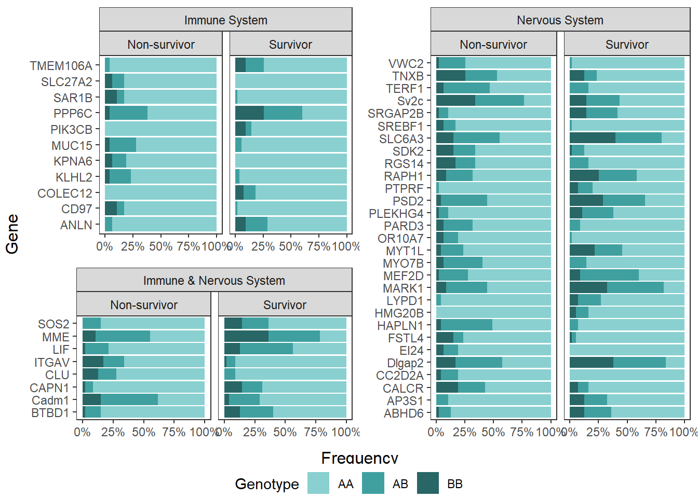
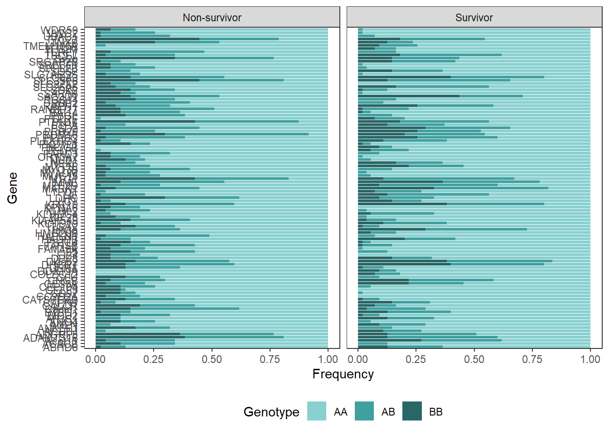
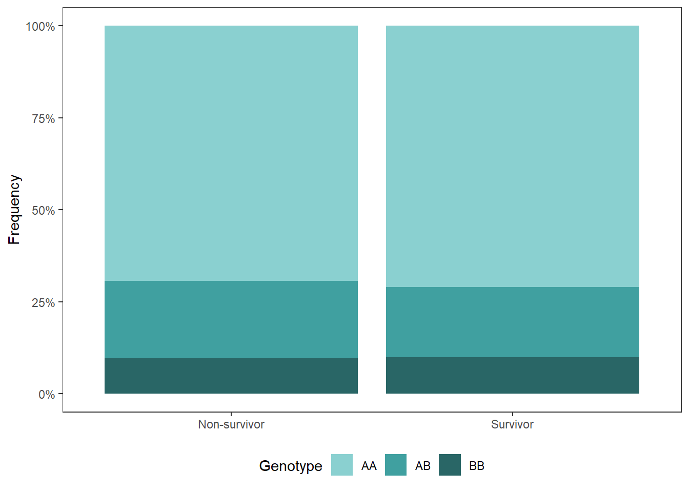

8 SNP visualization
8.1 Libraries
library(tidyverse)
library(data.table)
library(ggh4x)
library(gridExtra)
library(ggpubr)
library(grid)
library(conflicted)
conflict_prefer("as.factor", "base")## [conflicted] Will prefer base::as.factor over any other package.## [conflicted] Removing existing preference.
## [conflicted] Will prefer dplyr::select over any other package.## [conflicted] Removing existing preference.
## [conflicted] Will prefer dplyr::filter over any other package.8.2 Data
SNP Matrix coded as AD (additive dominant): 0 = Homozygous dominant, 1 = heterozygous, 2 = Homozygous minor
snp.genes.role <-
read.csv("Output Files/snp_gene_roles.csv",
row.names = 1)
meta <-
fread("Output Files/metadata_tidy.csv") %>%
mutate(seq.id = gsub("B5GAN", "", seq.id))
snp.matrix <-
fread("C:/Users/Christina/OneDrive - University of Maine System/pv-wgs/allsamples_maf_prune_dom.raw") %>%
select(!ends_with("HET")) %>%
rename_with(gsub,
pattern = "\\_[A-Z]{1}$",
replacement = "", colnames(.)) %>%
merge(., meta, by.x = "FID", by.y = "seq.id")
snp.fst.genes <-
read.csv("Output Files/allsamples_fst_sd_snp_geneid.csv") %>%
mutate(snp = paste(V1, "_", V4, sep = "")) %>%
select(gene, snp)8.3 Plot Immune & Nervous System Genes
Genotype AA = homozygous dominant Genotype AB = heterozygous Genotype BB = homozygous recessive
snp.frequency.role <-
snp.matrix %>%
select(FID, snp.genes.role$snp, classification) %>%
pivot_longer(!c(FID, classification), names_to = "snp", values_to = "genotype") %>%
group_by(classification, snp, genotype) %>%
summarize(sum = n()) %>%
merge(., snp.genes.role, by = "snp") %>%
mutate(genotype = ifelse(genotype == "0", "AA",
ifelse(genotype == "1", "AB", "BB")))## `summarise()` has regrouped the output.
## ℹ Summaries were computed grouped by classification, snp, and
## genotype.
## ℹ Output is grouped by classification and snp.
## ℹ Use `summarise(.groups = "drop_last")` to silence this message.
## ℹ Use `summarise(.by = c(classification, snp, genotype))` for
## per-operation grouping (`?dplyr::dplyr_by`) instead.snp.frequency.immune.plot <-
snp.frequency.role %>%
filter(role == "Immune System") %>%
mutate(genotype = as.factor(genotype)) %>%
ggplot(., aes(x = gene, y = sum, fill = genotype)) +
geom_col(position = "fill") +
scale_fill_manual(values = c("#8AD0D0","#40A0A0", "#296666"),
name = "Genotype") +
scale_y_continuous(labels = scales::percent) +
coord_flip() +
facet_nested_wrap(vars(role, classification), dir="h",,
strip.position="top", ncol=4, drop=TRUE) +
labs(x = NULL, y = NULL) +
theme_bw() +
theme(panel.grid = element_blank(),
legend.position = "bottom",
legend.text = element_text(size = 12),
legend.title = element_text(size = 14),
axis.text.x = element_text(size = 8),
axis.text.y = element_text(size = 12),
strip.text = element_text(size = 12))
snp.frequency.immune.plot
genotype.legend <- get_legend(snp.frequency.immune.plot)
snp.frequency.immune.plot <-
snp.frequency.immune.plot +
theme(legend.position = "none")
snp.frequency.nervous.plot <-
snp.frequency.role %>%
filter(role == "Nervous System") %>%
mutate(genotype = as.factor(genotype)) %>%
ggplot(., aes(x = gene, y = sum, fill = genotype)) +
geom_col(position = "fill") +
scale_fill_manual(values = c("#8AD0D0","#40A0A0", "#296666"),
name = "Genotype") +
scale_y_continuous(labels = scales::percent) +
coord_flip() +
facet_nested_wrap(vars(role, classification), dir="h",,
strip.position="top", ncol=4, drop=TRUE) +
labs(x = NULL, y = NULL) +
theme_bw() +
theme(panel.grid = element_blank(),
legend.position = "none",
axis.text.x = element_text(size = 8),
axis.text.y = element_text(size = 12),
strip.text = element_text(size = 12))
snp.frequency.nervous.plot
snp.frequency.immunenervous.plot <-
snp.frequency.role %>%
filter(role == "Immune & Nervous System") %>%
mutate(genotype = as.factor(genotype)) %>%
ggplot(., aes(x = gene, y = sum, fill = genotype)) +
geom_col(position = "fill") +
scale_fill_manual(values = c("#8AD0D0","#40A0A0", "#296666"),
name = "Genotype") +
scale_y_continuous(labels = scales::percent) +
coord_flip() +
facet_nested_wrap(vars(role, classification), dir="h",,
strip.position="top", ncol=4, drop=TRUE) +
labs(x = NULL, y = NULL) +
theme_bw() +
theme(panel.grid = element_blank(),
legend.position = "none",
axis.text.x = element_text(size = 8),
axis.text.y = element_text(size = 12),
strip.text = element_text(size = 12))
snp.frequency.immunenervous.plot
plot1 <- grid.arrange(arrangeGrob(snp.frequency.immune.plot,
snp.frequency.immunenervous.plot,
ncol = 1, heights = c(5.6, 4)))
plot2 <- grid.arrange(arrangeGrob(plot1, snp.frequency.nervous.plot,
ncol = 2),
bottom = textGrob("Frequency", gp = gpar(fontsize = 13)),
left = textGrob("Gene", rot = 90, gp = gpar(fontsize = 13)))

8.4 Plot all Genes associated with SNPs
snp.fst.frequency <-
snp.matrix %>%
select(FID, snp.fst.genes$snp, classification) %>%
pivot_longer(!c(FID, classification), names_to = "snp", values_to = "genotype") %>%
group_by(classification, snp, genotype) %>%
summarize(sum = n()) %>%
merge(., snp.fst.genes, by = "snp") %>%
mutate(genotype = ifelse(genotype == "0", "AA",
ifelse(genotype == "1", "AB", "BB")),
classification = ifelse(classification == "Non-survivor", "Case", "Control"))## `summarise()` has regrouped the output.
## ℹ Summaries were computed grouped by classification, snp, and
## genotype.
## ℹ Output is grouped by classification and snp.
## ℹ Use `summarise(.groups = "drop_last")` to silence this message.
## ℹ Use `summarise(.by = c(classification, snp, genotype))` for
## per-operation grouping (`?dplyr::dplyr_by`) instead.snp.frequency.fst.plot <-
snp.fst.frequency %>%
mutate(genotype = as.factor(genotype)) %>%
ggplot(., aes(x = gene, y = sum, fill = genotype)) +
geom_col(position = "fill") +
labs(x = "Gene", y = "Frequency") +
scale_fill_manual(values = c("#8AD0D0","#40A0A0", "#296666"),
name = "Genotype") +
coord_flip() +
facet_wrap(~classification) +
theme_bw() +
theme(panel.grid = element_blank(),
legend.position = "bottom")
snp.frequency.fst.plot
ggsave("Figures/snp_frequency_fst.jpg", snp.frequency.fst.plot,
width = 10, height = 15, units = "in", dpi = 600)
snp.fst.frequency.overall <-
snp.fst.frequency %>%
group_by(classification, genotype) %>%
summarize(n = sum(sum)) %>%
mutate(prop = ifelse(classification == "Non-survivor", n/4841, n/5665)) %>%
data.frame() %>%
ggplot(., aes(x = classification, y = n, fill = genotype)) +
geom_col(position = "fill") +
labs(x = NULL, y = "Frequency") +
scale_y_continuous(labels = scales::percent) +
scale_fill_manual(values = c("#8AD0D0","#40A0A0", "#296666"),
name = "Genotype") +
theme_bw() +
theme(panel.grid = element_blank(),
legend.position = "bottom")## `summarise()` has regrouped the output.
## ℹ Summaries were computed grouped by classification and genotype.
## ℹ Output is grouped by classification.
## ℹ Use `summarise(.groups = "drop_last")` to silence this message.
## ℹ Use `summarise(.by = c(classification, genotype))` for
## per-operation grouping (`?dplyr::dplyr_by`) instead.